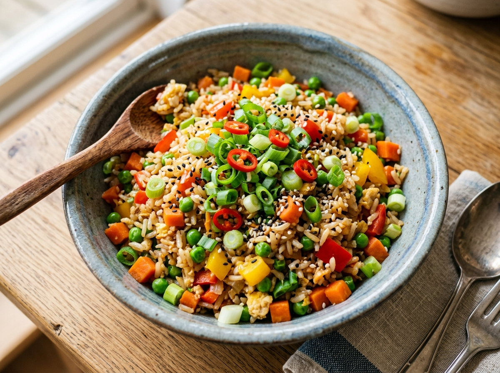

Vegetable Fried Rice
A quick, aromatic, and colorful Indo-Chinese style stir-fried rice loaded with crisp garden vegetables, fragrant garlic, and a savory splash of soy sauce. Simple to make and perfect for a satisfying lunch or dinner.
Ingredients
- 3 cups cooked Basmati or Jasmine rice (chilled or day-old)
- 1/2 cup carrots, finely diced
- 1/2 cup French beans, finely chopped
- 1/2 cup green cabbage, shredded
- 1/2 cup green bell pepper (capsicum), finely diced
- 1/3 cup fresh or frozen green peas
- 3 stalks spring onions (white and green parts separated)
- 4 cloves garlic, finely minced
- 1 tablespoon fresh ginger, finely grated
- 2 tablespoons dark soy sauce
- 1 tablespoon toasted sesame oil
- 2 tablespoons cooking oil
- 1/2 teaspoon freshly ground black pepper
- Salt to taste
Preparation Instructions
- Prepare the rice: Ensure the cooked rice is thoroughly cooled and individual grains are separated. Day-old chilled rice produces the crispest, non-mushy texture.
- Heat the wok: Place a large wok or deep non-stick pan over high heat and add 2 tablespoons of cooking oil. Heat until shimmering and lightly smoking.
- Sauté aromatics: Add the minced garlic, grated ginger, and chopped spring onion whites. Sauté vigorously for 30 seconds until fragrant without burning the garlic.
- Stir-fry vegetables: Add the diced carrots, French beans, shredded cabbage, green peas, and bell pepper. Stir-fry rapidly on high flame for 3 to 4 minutes until veggies are tender yet crunchy.
- Season and combine: Lower the flame slightly. Add the cold cooked rice, followed by dark soy sauce, sesame oil, black pepper, and salt.
- Final high-heat toss: Turn the heat back to high. Gently toss the ingredients together for 2 minutes until the rice is thoroughly heated through and coated evenly. Garnish with spring onion greens and serve hot.